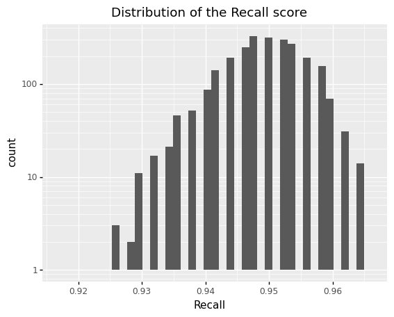
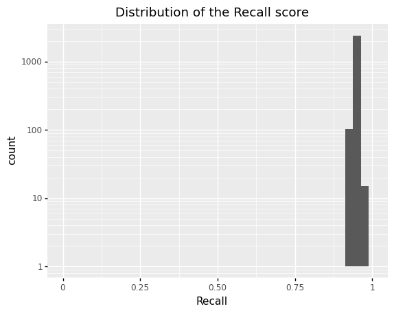

Consider that we are creating a text classification model that will discover a few target needles in a massive haystack of records. Maybe we are looking for messages of Death among emergency services messages - 20 for every 50,000 messages. Labeling this large dataset and finding the Death messages is costly, so we don’t want to label more than is necessary. If we already have enough to estimate the target proportion, let us determine whether the sample size used for training the classification model is large enough. Earler, in ‘Sample_Size_Review.ipynb’, we attempted to calculate n from the Confidence Interval expression. Now, we reverse this process to calculate the Prediction Interval from the selected n.
The following bootstrap steps are used to create Prediction Intervals from a sample. We will use Recall as our scoring estimate and we will use the FastText model (the simplest text classifier) as a surrogate Continuous Bag Of Words (CBOW) model to quickly train and get results.
- create N models
- predict on test data, then get counts from confusion matrix
- create distribution of proportion missing (recall)
- estimate sigma of distribution
Configure Environment
import os
path_current = os.getcwd()
! ls ../../GitLab/event-type/pipeline_components
encoder.py preprocess.py Soln_EventType
io_component.py __pycache__ streamarray.py
path_data = '../../Data/Event_Type/model6'
path_models = './models'
path_components = '../../GitLab/event-type/'
%load_ext autoreload
%autoreload 2
#(in term) apt install build-essential
#! pip install fasttext==0.9.2
#! pip install truecase
os.chdir( os.path.join(path_current, path_components) )
from pipeline_components.preprocess import preprocess_data
from pipeline_components import io_component
#from pipeline_components import encoder
os.chdir( path_current )
import dill
import csv
import spacy
import fasttext as ft
import pandas as pd
import numpy as np
%aimport
Modules to reload:
all-except-skipped
Modules to skip:
ft.FastText.eprint = lambda x: None
import warnings
warnings.filterwarnings('ignore')
warnings.simplefilter('ignore')
filename = 'globalsave.pkl'
dill.dump_session(filename)
# and to load the session again:
dill.load_session(filename)
Prepare Pipeline
Pipeline Components
nlp_spacy = spacy.load("en_core_web_sm")
from pipeline_components import io_component
nlp_spacy.add_pipe('input_component', last=True)
from pipeline_components.Soln_EventType import reportableEvent, EVENT_ACTION
nlp_spacy.add_pipe("reportableEvent_component", last=True)
<pipeline_components.Soln_EventType.reportableEvent.reportableEventcomponent at 0x7fb68db6ef40>
Prepare Text
os.chdir( os.path.join(path_current, path_data) )
dt = pd.read_csv('train_sent_v6.csv')
dt_t = pd.read_csv('test_sent_v6.csv')
dt['label'] = '__label__' + dt['label'].astype(str)
dt_t['label'] = '__label__' + dt_t['label'].astype(str)
dfTrain = dt[['label', 'sentence']]
dfTest = dt_t[['label', 'sentence']]
dfTrain['label'].value_counts()
__label__Death 4220
__label__NonDeath 1448
Name: label, dtype: int64
dfTest['label'].value_counts()
__label__Death 499
__label__NonDeath 159
Name: label, dtype: int64
Prepare Code
class Ensemble:
def __init__(self, number_of_models, model_directory):
self.number_of_models = number_of_models
self.model_directory = model_directory
self.ensemble = []
self.prefix_model = 'fs_train_v'
self.prefix_validate = 'fs_validate_v'
def populate_ensemble_list(self):
newlist = [os.path.join(dir, file) for file in os.listdir(dir) if '.bin' in file]
self.ensemble.extend( newlist)
def get_training_file(self, iteration):
name_train = self.prefix_model + str(iteration) + '.txt'
return os.path.join(self.model_directory, name_train)
def get_validation_file(self, iteration):
name_train = self.prefix_validate + str(iteration) + '.txt'
return os.path.join(self.model_directory, name_train)
def get_model_binary(self, iteration):
name_binary = self.prefix_model + str(iteration) + '.bin'
return os.path.join(self.model_directory, name_binary)
def get_model(self, model_idx):
return ft.load_model( self.ensemble[model_idx] )
def get_model_predictions(self, model_idx, text_list):
model = ft.load_model( self.ensemble[model_idx] )
predictions = [model.predict(text)[0][0] for text in text_list] #<<< this should take the text list directly - no need for a list comprhension
return predictions
def create_datasets(self, dfTrain, dfTest, frac):
for iteration in range(1, (self.number_of_models+1) ):
name_train = self.get_training_file(iteration)
name_validate = self.get_validation_file(iteration)
train = dfTrain.sample(frac=FRAC, replace=True, random_state=iteration)
idx = list(set(dfTrain.index) - set(train.index))
validate = dfTrain.iloc[idx]
#dfValidate = pd.concat([dfTest, validate], ignore_index=True)
#preprocessing is already performed
train.to_csv(name_train,
index = False,
sep = ' ',
header = None,
quoting = csv.QUOTE_NONE,
quotechar = "",
escapechar = " ")
validate.to_csv(name_validate,
index = False,
sep = ' ',
header = None,
quoting = csv.QUOTE_NONE,
quotechar = "",
escapechar = " ")
print(f'completed created {self.number_of_models} training / validation datasets')
def train_models(self):
for iteration in range(1, (self.number_of_models+1) ):
print(iteration)
input_file = self.get_training_file(iteration)
model_file = self.get_model_binary(iteration)
model = ft.train_supervised(input_file, lr=0.1, epoch=5, loss = 'softmax')
model.save_model(model_file)
self.ensemble.append(model_file)
print(f'completed training {self.number_of_models} models')
def predict_models(self, text):
text_predictions = [ensemble.get_model(idx).predict(text)[0][0] for idx, mdl in enumerate(self.ensemble)]
return text_predictions
Prepare Workflow
NUMBER_OF_MODELS = 2500
FRAC = .25
model_dir = os.path.join(path_current, path_data, 'fasttext')
ensemble = Ensemble(NUMBER_OF_MODELS, model_dir)
ensemble.populate_ensemble_list()
Create datasets
ensemble.create_datasets(dfTrain, dfTest, FRAC)
completed created 2500 training / validation datasets
Train models
You can fill about 10 models per GB of memory, so, 20GB will not work for 200 models.
%timeit -n1
ensemble.train_models()
#test
print( ensemble.get_model(0).get_labels() )
mdl = 2
text1 = "AFTER THE CARDIAC ARREST THE PATIENT WAS REMOVED FROM THE VENTILATOR AND EXPIRED LATER THAT EVENING"
text2 = "THE PATIENT WAS TOTALLY ALIVE"
print( ensemble.get_model(mdl).predict(text1) )
print( ensemble.get_model(mdl).predict(text2) )
['__label__Death', '__label__NonDeath']
(('__label__Death',), array([0.78851449]))
(('__label__NonDeath',), array([0.60587746]))
ensemble.get_model(0).predict([text1,text2])[0]
[['__label__Death'], ['__label__NonDeath']]
ensemble.get_model_predictions(0, [text1,text2])
['__label__Death', '__label__NonDeath']
import dill #pip install dill --user
filename = 'globalsave.pkl'
dill.dump_session(filename)
Run
Run patterns
#test
doc = nlp_spacy(text1)
def run_pattern(row):
doc = nlp_spacy(row['sentence'])
tag = [tag['pattern'] for tag in doc._.result['text_extract'] if tag['model'] == 'reportablevent'][0]
return tag
dfTest['patterns'] = dfTest.apply(run_pattern, axis=1)
dfTest[['label','patterns']].value_counts()
label patterns
__label__Death DEATH 474
__label__NonDeath NEGATION_UNRELATED 19
DEATH 12
__label__Death NEGATION_UNRELATED 8
DEATH_RESUSCITATION 6
DEATH_UNRELATED 3
__label__NonDeath NEGATION 1
dtype: int64
Run ensemble and solution logic
For each model, for each test record:
- apply model
- get label prediction, determine TP, TN, FP, FN
- get scores for each model results
def get_model_outcome(actual_label, model_rslt):
outcome = 'None'
if actual_label==model_rslt and model_rslt=='__label__Death':
outcome = 'TP'
if actual_label==model_rslt and model_rslt=='__label__NonDeath':
outcome = 'TN'
if actual_label!=model_rslt and model_rslt=='__label__Death':
outcome = 'FP'
if actual_label!=model_rslt and model_rslt=='__label__NonDeath':
outcome = 'FN'
return outcome
def get_model_prediction(col):
lCol_texts = dfTest.sentence.tolist()
predictions = []
for idx, mdl in enumerate(ensemble.ensemble):
predictions.append( ensemble.get_model_predictions(idx, lCol_texts))
return predictions
%timeit -n1
Predictions = pd.DataFrame()
tmp = get_model_prediction( dfTest.sentence )
Predictions = pd.DataFrame(tmp).transpose()
Predictions.loc[0]
0 __label__Death
1 __label__Death
2 __label__Death
3 __label__Death
4 __label__Death
...
2495 __label__Death
2496 __label__Death
2497 __label__Death
2498 __label__Death
2499 __label__Death
Name: 0, Length: 2500, dtype: object
dfTest['idx'] = dfTest.index
# run ensemble of models
def run_ensemble(row):
idx_pred = row['idx']
label = row['label']
text = row['sentence']
pattern = row['patterns']
mdl_results = Predictions.loc[idx_pred].tolist()
soln_results = [rslt
if rslt=='__label__Death' and pattern not in ["NEGATION", "NONE", None, "NEGATION_UNRELATED"]
else '__label__NonDeath'
for rslt in mdl_results
]
soln_outcomes = [get_model_outcome(label, rslt) for rslt in soln_results]
return soln_outcomes
Outcomes = pd.DataFrame()
Outcomes = dfTest.apply(run_ensemble, axis=1, result_type="expand")
def get_scores(col):
lCol = col.tolist()
TPs = [1 for outcome in lCol if outcome == 'TP']
TNs = [1 for outcome in lCol if outcome == 'TN']
FPs = [1 for outcome in lCol if outcome == 'FP']
FNs = [1 for outcome in lCol if outcome == 'FN']
TP = sum(TPs)
TN = sum(TNs)
FP = sum(FPs)
FN = sum(FNs)
denom = TP + FN
Recall = TP / denom if denom > 0 else 1
return TP,TN,FP,FN, Recall
Scores = pd.DataFrame()
tmp = Outcomes.apply(get_scores, axis=0, result_type="expand")
Scores[['TP', 'TN', 'FP', 'FN', 'Recall']] = tmp.transpose()
Results, review bootstraping methods
Individual samples
Lets review the test data scores to determine the records that were missed the most.
#dfTest.head()
#Outcomes.loc[:,0]
Scores.head()
| TP | TN | FP | FN | Recall | |
|---|---|---|---|---|---|
| 0 | 471.0 | 147.0 | 12.0 | 28.0 | 0.943888 |
| 1 | 478.0 | 147.0 | 12.0 | 21.0 | 0.957916 |
| 2 | 473.0 | 147.0 | 12.0 | 26.0 | 0.947896 |
| 3 | 476.0 | 147.0 | 12.0 | 23.0 | 0.953908 |
| 4 | 475.0 | 149.0 | 10.0 | 24.0 | 0.951904 |
Scores.sort_values(['FN'], ascending=False).sort_values(['Recall'])
| TP | TN | FP | FN | Recall | |
|---|---|---|---|---|---|
| 1550 | 458.0 | 147.0 | 12.0 | 41.0 | 0.917836 |
| 267 | 460.0 | 147.0 | 12.0 | 39.0 | 0.921844 |
| 385 | 462.0 | 149.0 | 10.0 | 37.0 | 0.925852 |
| 826 | 462.0 | 148.0 | 11.0 | 37.0 | 0.925852 |
| 1447 | 462.0 | 149.0 | 10.0 | 37.0 | 0.925852 |
| ... | ... | ... | ... | ... | ... |
| 2402 | 481.0 | 148.0 | 11.0 | 18.0 | 0.963928 |
| 2156 | 481.0 | 147.0 | 12.0 | 18.0 | 0.963928 |
| 1431 | 481.0 | 147.0 | 12.0 | 18.0 | 0.963928 |
| 1316 | 481.0 | 148.0 | 11.0 | 18.0 | 0.963928 |
| 447 | 482.0 | 147.0 | 12.0 | 17.0 | 0.965932 |
2500 rows × 5 columns
tmp = Outcomes.transpose()
tmp1 = tmp.loc[[447,1316,1431,2156,2402]].transpose()
idx_FN = tmp1[tmp1[447]=='FN'].index.tolist()
sent_FN = dfTest.loc[idx_FN].sentence
No models correclty hit on the some of the setences.
print(f'Fraction of sentences that are very difficult to classify: {len(sent_FN)/dfTest.shape[0]} \n')
sent_FN.tolist()
Distribution of Recall score
This is a HIGHLY conservative histogram of the Recall scores. It is conservative because:
- we are using the simplest NLP model available - FastText
- the model is only trained on 25% of all labeled statements
We are placing ourselves at this disadvantage to see how poor the results can be; however, they are still quite good. We are also using the simple FastText model because the amount of time to train the production, Transformer model is prohibitively long.
from plotnine import *
from plotnine.data import *
%matplotlib inline
(
ggplot(Scores, aes(x='Recall'))
+ geom_histogram()
+ scale_y_continuous(
trans = "log10"
)
+ ggtitle('Distribution of the Recall score')
)

<ggplot: (8776360785195)>
(
ggplot(Scores, aes(x='Recall'))
+ geom_histogram()
+ scale_y_continuous(
trans = "log10"
)
+ xlim(0, 1)
+ ggtitle('Distribution of the Recall score')
)

<ggplot: (8776360674042)>
We can say with 90% probability that the true Recall score will be higher than 0.94. So, we will use 0.94 as our worst-case estimate for Recall. Note, that all of this analysis is done very conservatively by using weaker models with only 25% (~1400 samples) of the training data. If we had not been so conservative, then the distribution would have been too narrow to investigate.
With a 0.94 Recall score, our worst-case scenario is that, out of 100 Death events, we would miss 6.
print( f'samplings: {len(Scores.Recall) }')
print( f'mean: {np.mean(Scores.Recall) }')
print( f'median: {np.median(Scores.Recall) }')
print( f'quantile - [0.05, 0.10]: {np.quantile(Scores.Recall, [0.05, 0.10]) }')
samplings: 2500
mean: 0.949211222444898
median: 0.9498997995991983
quantile - [0.05, 0.10]: [0.93787575 0.94188377]
Scores[Scores['Recall'] < .94].shape[0] / Scores.shape[0]
0.0964
Scores[Scores['Recall'] < 0.93].shape[0] / Scores.shape[0]
0.0072